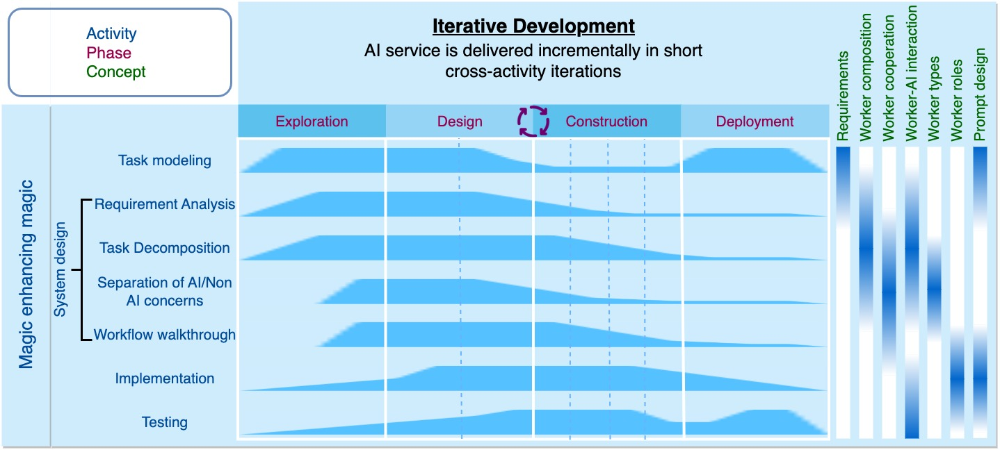

AI Chain Concepts
Promptmanship: process, concepts, activities, and patterns
We not only inherit and adapt traditional software concepts such as software requirements, object composition and collaboration, and object roles to the AI chain context, but also developes unique concepts specific to AI chains such as Software 1.0/2.0/3.0 workers, worker-AI interaction modes, and prompt designs and patterns. These concepts have different level of relevance to different AI chain engineeering activities (indicated by the blue region below a concept in the above figure), and they will be identified, analyzed and refined in various AI chain engineering activities throughout the rapid prototyping process of AI services.
AI chain requirements
Building AI chains is a rapid prototyping process that creates custom AI services on top of foundation models. Foundation models make rapid prototyping of AI services feasible, as we no longer need to spend time and effort on data engineering and model training, but focus on the act of solving problems using AI. Furthermore, rapid prototyping allows for the quick delivery of working software and obtaining feedback to iteratively improve AI services. See how we build showcase1-name and showcase2-name through rapid prototyping in Sapper IDE. As AI chain engineering frees us from low-level coding, we will see a revival of important but undervalued software engineering activities, such as requirement analysis, specification and verification throughout AI chain engineering. The key is to align problem understanding with model capability through iterative design, evaluation and improvement of AI chains and prompts. This process can be enhanced by the interaction with large language models, which we call magic enhancing magic.
Worker composition and cooperation
An AI chain consist of a set of cooperating function units, which we call workers, analogous to objects. AI chain is a recursive concept. Depending on the task complexity and model capability, an AI chain may organize cooperating workers into a hierarchy of workers. The worker hierarchy can be represented in composite pattern, in which the leaf worker has no children and implements the functionality directly, and the composite worker (analogous to module) maintains a container of child workers (leaf or composite) and forwards requests to these children. An AI chain also needs to specify the workflow, control structure, and cooperation of its workers. Workers need to define a "function signature" for communicating with human and other workers. We can use workflow patterns to define and implement the cooperation between workers, data management, and exception handling. These worker design aspects are analogous to system design and should follow computational thinking principles, such as problem decomposition, pattern recognition, and algorithmic thinking, as well as well-recognized software engineering practices, such as separation of concerns and modularity.
Worker types
An AI chain may consist of three main types of workers and two variant types.
- Software 3.0 workers use foundation models to accomplish the tasks specified in natural language prompts.
- Software 2.0 workers use some AI functionality by programming language, for example, the rewrite classifier in Re3, the answer consistency checker in Ask My Anything. or web browser.
- Software 1.0 workers invoke non-AI tools or APIs by programming language, for example, calculator, Python interpreter.
There are two types of hybrid workers which blend the input of worker 3.0 and the processing of worker 1.0/2.0. That is, the hybrid workers accept natural language prompts as worker 3.0, but they do not directly use foundation models to acomplish the tasks. Instead, they use large language models to generate code or invoke other models to acomplish the tasks as worker 1.0/2.0. We refer to such hybrid workers as worker 1.5/2.5.
Software 3.0 workers will play the main role in an AI chain, but they will not cover 100% the problem space where Software 2.0 and Software 1.0 workers can perform more effectively and economically. When designing AI chains, it is important to separate AI and non-AI concerns in the task and determine the most effective worker type for different concerns.
Worker-AI interaction modes
Large language models have been shown to solve various tasks given only prompts, but many real-world applications involve multi-step tasks that are nontrivial for a single run of the model. It is thus important to determine the proper interaction mode that a Software 3.0 worker uses to interact with the model to accomplish the task or a step of the task. We define four interaction modes, with the increasing reasoning capability:
- L1 - a leaf worker that keeps all reasoning implicit. L1 keeps all reasoning implicit and produces the final answer directly.
- L2 - a leaf worker with Chain-of-Thoughts (CoT) instruction and/or examples. L2 encourages reasoning before answering by the CoT instruction like "let’s think step by step" (Kojima et al. 2022), "we need to first solve" (Zhou et al. 2022), "are there missing information", and/or few-shot CoT examples that demonstrate instance-level reasoning steps ((Wei et al. 2022)).
- L3 - a leaf worker with explicit meta-level problem-solving workflow. L3 breaks down a complex problem into smaller steps and explicitly expresses the meta-level problem solving workflow as part of the prompt (see the Table 1 in the Iterated Decomposition paper).
- L4 - a composite worker (i.e., AI chain) consists of multiple cooperating workers. Each worker is responsible for a sub-step, and they cooperate to accomplish the overall task (see AI chain examples from the literature and explore our AI chain showcases).
Although L2 and L3 incorporate reasoning steps, they perform all reasoning steps in a single generative pass, which may not give the model enough "thinking time" to solve complex, multi-step problems, even if the model can successfully solve each intermediate sub-problem within a step (). Furthermore, L2 and L3 offer no control over the black-box language model reasoning process, which may generate unrelated or incorrect steps while still resulting in the correct answers. L4 (i.e., AI chain) addresses these limitations by representing task sub-steps as explicit cooperating workers.
Worker roles and prompt design
A prompt defines the function of a worker and “program” the foundation model to complete the corresponding task. The workers should follow single responsibility principle and play distinct roles instructed by their prompts. We can define common stereotypes for worker roles, such as input rewriter, splitter, reverse questioner, planner information inquirer, commander, composer, state monitor, verifier. We document four categories of prompting design patterns to standardize prompt engineering and improve prompt performance.
While prompt programming lowers the barrier for non-technical individuals to develop AI prototypes, the difficulty of designing effective prompts increases with increasing reasoning ability of the worker. For L2, challenges arise in finding or generating representative few-shot examples (so called example sourcing), requiring AI chain engineers to be creative and maintain example datasets (although would be smaller than those typically used to train neural networks). For L3, the challenge is to accurately describe task workflows, which can be achieved using semi-structured or code-like prompts.
Adopting L4, decomposing complex workflows into cooperating workers, significantly reduces prompt design difficulty as each worker only needs to execute a simple sub-step of the complex workflow. Furthermore, we can provide each sub-task worker with sufficient specific examples, test and debug individual workers (akin to unit testing) to optimize its performance, and seamlessly plug the improved worker into the AI chain, as a systematic way to improve performance on the complex task. A well-design worker can be reused across multiple tasks. Last but not least, L4 offers more transparent and controllable process supervision. This is crucial for responsible AI, especially for important applications in which the process used to generate the output matters as much as the output itself.